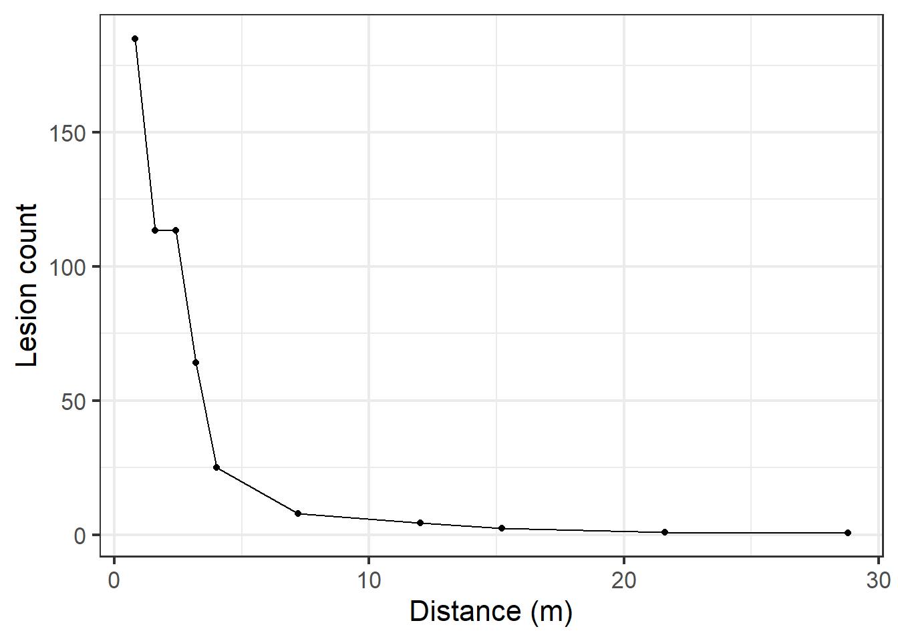
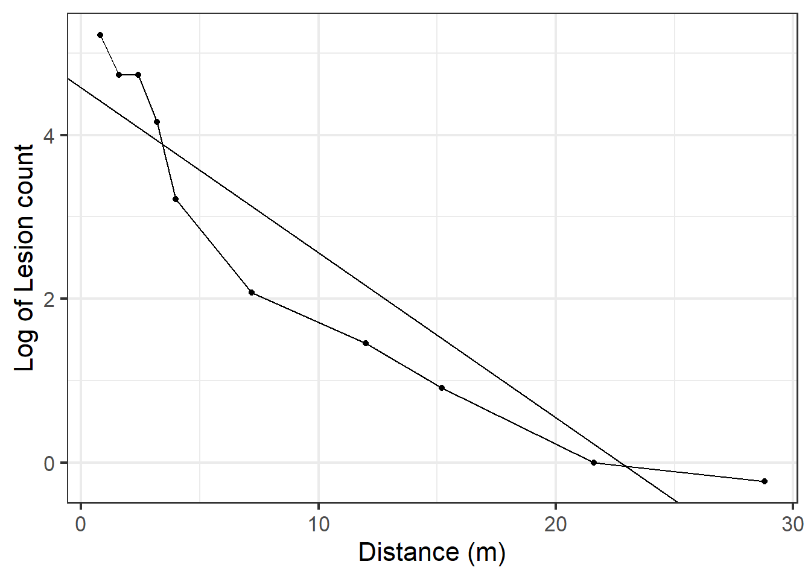
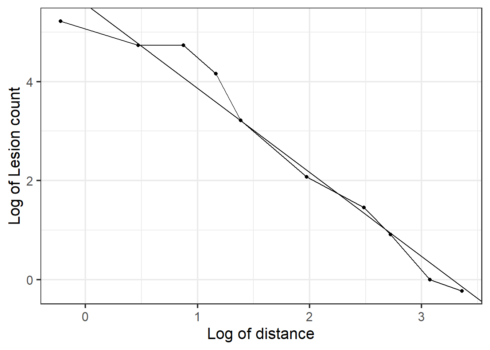
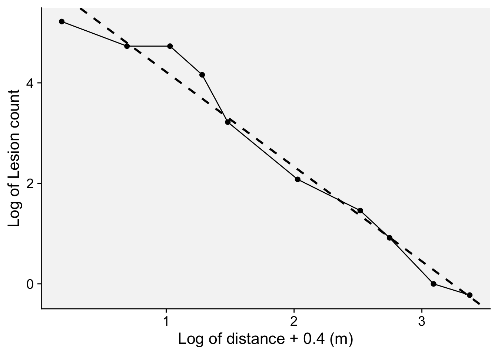
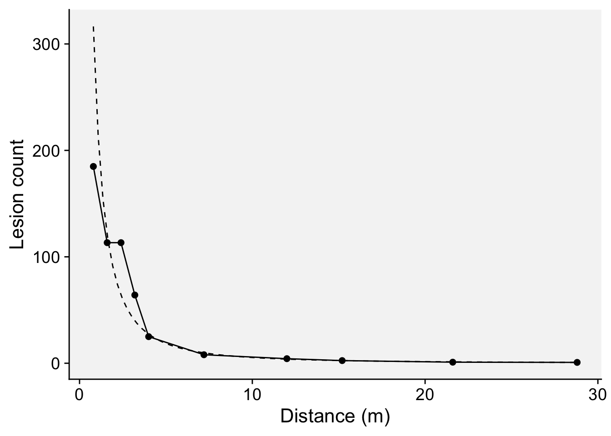
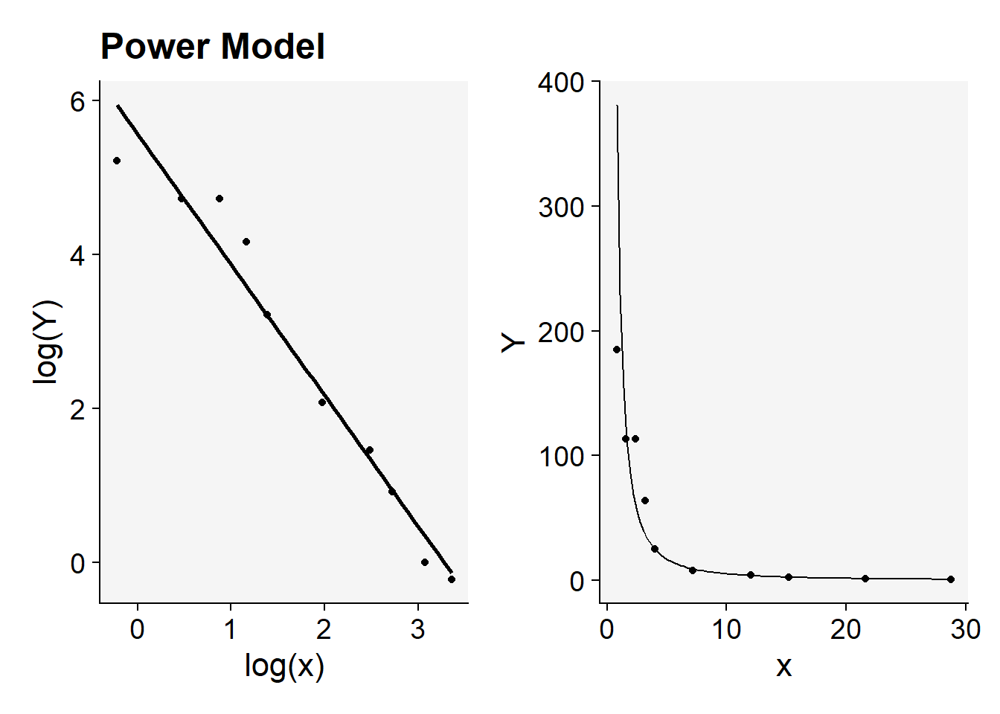
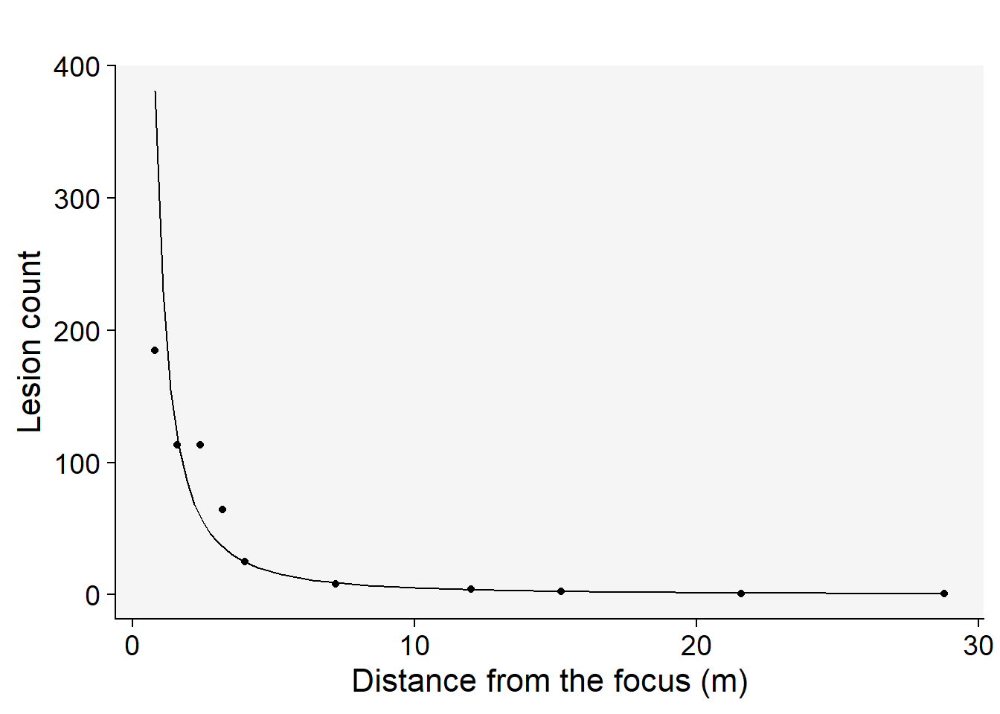

library(tidyverse)
library(r4pde)
theme_set(theme_r4pde(font_size = 16)) # set global theme14 Fitting gradient models
This is a work in progress that is currently undergoing heavy technical editing and copy-editing
14.1 Dataset
The hypothetical data describe the gradient curve for the number of lesions counted at varying distances (in meters) from the source. Let’s create two vectors, one for the distances \(x\) and the other for the lesion count \(Y\), and then a data frame by combining the two vectors.
# create the two vectors
x <- c(0.8, 1.6, 2.4, 3.2, 4, 7.2, 12, 15.2, 21.6, 28.8)
Y <- c(184.9, 113.3, 113.3, 64.1, 25, 8, 4.3, 2.5, 1, 0.8)
grad1 <- data.frame(x, Y) # create the dataframe
knitr::kable(grad1) # show the gradient| x | Y |
|---|---|
| 0.8 | 184.9 |
| 1.6 | 113.3 |
| 2.4 | 113.3 |
| 3.2 | 64.1 |
| 4.0 | 25.0 |
| 7.2 | 8.0 |
| 12.0 | 4.3 |
| 15.2 | 2.5 |
| 21.6 | 1.0 |
| 28.8 | 0.8 |
14.2 Visualize the gradient curve
The gradient can be visualized using ggplot function.
grad1 |>
ggplot(aes(x, Y))+
theme_r4pde(font_size = 16)+
geom_point(size = 2)+
geom_line()+
labs(y = "Lesion count",
x = "Distance (m)")

14.3 Linear regression
One method to determine the best-fitting model for gradient data is through linear regression. Depending on the chosen model, the transformed \(Y\) variable is regressed against the distance (which could be either in its original form or transformed). By doing this, we can derive the model’s parameters and evaluate its fit using various statistics. Two primary ways to appraise the model’s fit are by visually inspecting the regression line and examining the coefficient of determination (often denoted as \(R^2\) ). Now, let’s proceed to fit each of the three models discussed in the previous chapter.
14.3.1 Exponential model
In this model, the log of \(Y\) is taken and regressed against the (untransformed) distance from the focus. Let’s fit the model and examine the summary output of model fit.
reg_exp <- lm(log(Y) ~ x, data = grad1)
jtools::summ(reg_exp)MODEL INFO:
Observations: 10
Dependent Variable: log(Y)
Type: OLS linear regression
MODEL FIT:
F(1,8) = 57.39, p = 0.00
R² = 0.88
Adj. R² = 0.86
Standard errors: OLS
------------------------------------------------
Est. S.E. t val. p
----------------- ------- ------ -------- ------
(Intercept) 4.58 0.35 13.00 0.00
x -0.20 0.03 -7.58 0.00
------------------------------------------------The intercept \(a\) represents the natural logarithm (log) of the response variable when the predictor is at a distance of zero. The negative slope \(-b\) indicates the rate at which the response decreases as the predictor increases — this is the decline rate of the gradient. The adjusted R-squared value of 0.86 suggests that approximately 86% of the variability in the response variable can be explained by the predictor in the model. While this seems to indicate a good fit, it is essential to compare this coefficient with those from other models to determine its relative goodness of fit. Furthermore, visually inspecting a regression plot is crucial. By doing this, we can check for any patterns or residuals around the predicted line, which can provide insights into the model’s assumptions and potential areas of improvement
grad1 |>
ggplot(aes(x, log(Y)))+
theme_r4pde(font_size = 16)+
geom_point(size = 2)+
geom_line()+
geom_abline(slope = coef(reg_exp)[[2]], intercept = coef(reg_exp)[[1]],
linewidth = 1, linetype = 2)+
labs(y = "Log of Lesion count",
x = "Distance (m)")

From the aforementioned plot, it’s evident that the exponential model might not be the optimal choice. This inference is drawn from the noticeable patterns or residuals surrounding the regression fit line, suggesting that the model may not capture all the underlying structures in the data.
14.3.2 Power law model
For the power law model, we employ a log-log transformation: the natural logarithm (log) of \(Y\) is regressed against the log of \(X\). Following this transformation, we apply the regression procedure to determine the model’s parameters. Additionally, we extract the relevant statistics to evaluate the model’s fit to the data
reg_p <- lm(log(Y) ~ log(x), data = grad1)
jtools::summ(reg_p)MODEL INFO:
Observations: 10
Dependent Variable: log(Y)
Type: OLS linear regression
MODEL FIT:
F(1,8) = 203.26, p = 0.00
R² = 0.96
Adj. R² = 0.96
Standard errors: OLS
------------------------------------------------
Est. S.E. t val. p
----------------- ------- ------ -------- ------
(Intercept) 5.56 0.25 22.66 0.00
log(x) -1.70 0.12 -14.26 0.00
------------------------------------------------The plot presented below underscores the superiority of the power law model in comparison to the exponential model. One of the key indicators of this superior fit is the higher coefficient of determination, \(R^2\) for the power law model. A higher \(R^2\) value suggests that the model can explain a greater proportion of the variance in the dependent variable, making it a better fit for the data at hand.
grad1 |>
ggplot(aes(log(x), log(Y)))+
theme_r4pde(font_size = 16)+
geom_point(size = 2)+
geom_line()+
geom_abline(slope = coef(reg_p)[[2]], intercept = coef(reg_p)[[1]],
linewidth = 1, linetype = 2)+
labs(y = "Log of Lesion count",
x = "Log of distance")

14.3.3 Modified power law model
In the modified power model, a constant is added to \(x\).
reg_pm <- lm(log(Y) ~ log(x + 0.4), data = grad1)
jtools::summ(reg_pm)MODEL INFO:
Observations: 10
Dependent Variable: log(Y)
Type: OLS linear regression
MODEL FIT:
F(1,8) = 302.16, p = 0.00
R² = 0.97
Adj. R² = 0.97
Standard errors: OLS
-------------------------------------------------
Est. S.E. t val. p
------------------ ------- ------ -------- ------
(Intercept) 6.10 0.23 26.73 0.00
log(x + 0.4) -1.88 0.11 -17.38 0.00
-------------------------------------------------grad1 |>
ggplot(aes(log(x+0.4), log(Y)))+
theme_r4pde(font_size = 16)+
geom_point(size = 2)+
geom_line()+
geom_abline(slope = coef(reg_pm)[[2]], intercept = coef(reg_pm)[[1]],
linewidth = 1, linetype = 2)+
labs(y = "Log of Lesion count",
x = "Log of distance + 0.4 (m)")

Among the models tested, the modified power law emerges as the most suitable choice based on its highest coefficient of determination, \(R^2\) . This conclusion is not only supported by the statistical metrics but also visibly evident when we examine the graphs of the fitted models.To further illustrate this, we’ll generate a gradient plot. On this plot, we’ll overlay the data with the best-fitting model — the modified power law. Remember, to accurately represent the data, we’ll need to back-transform the parameter \(a\) before plotting.
grad1 |>
ggplot(aes(x, Y))+
theme_r4pde(font_size = 16)+
geom_point(size = 2)+
geom_line()+
stat_function(fun = function(x) intercept = exp(coef(reg_pm)[[1]]) * ((x + 0.4)^coef(reg_pm)[[2]]), linetype = 2) +
labs(y = "Lesion count",
x = "Distance (m)")
14.4 fit_gradients
The fit_gradients() function of the {r4pde} package is designed to take in a dataset consisting of two variables: distance (x) and some measure of the phenomenon (Y). Using this data, the function fits each of the three models and evaluates their performance by calculating the R-squared value for each fit. The higher the R-squared value, the better that particular model explains the variation in the data. Once the models are fit, the function returns a series of outputs:
- A table that summarizes the parameters and fit statistics of each model.
- Diagnostic plots that show how well each model fits the data in its transformed space.
- Plots that juxtapose the original, untransformed data against the fits from each of the three models.
A notable feature is the addition of a constant (C) that can be adjusted in the modified power model. This provides flexibility in tweaking the model to better fit the data if necessary. By providing a comparative analysis of three gradient models, it enables users to quickly identify which model best represents the spatial patterns in their data.
Here is how to use the function with our grad1 dataset. Then we show the table and two plots as outputs.
library(r4pde)
theme_set(theme_r4pde(font_size = 16))
fit1 <- fit_gradients(grad1, C = 0.4)
knitr::kable(fit1$results_table) # display the table with coefficients and stats| a.(Intercept) | se_a | sig_a | b.x | se_b | sig_b | a_back.(Intercept) | R2 | |
|---|---|---|---|---|---|---|---|---|
| Exponential | 4.577 | 0.352 | ** | -0.201 | 0.027 | ** | 97.222 | 0.878 |
| Power | 5.564 | 0.246 | ** | -1.698 | 0.119 | ** | 260.864 | 0.962 |
| Modified_Power | 6.101 | 0.228 | ** | -1.884 | 0.108 | ** | 446.304 | 0.974 |
library(patchwork) # to place plots side by side
(fit1$plot_power |
fit1$plot_power_original)+
labs(title = "")
Each plot can be further customized for publication purposes.
fit1$plot_power_original +
labs(x = "Distance from the focus (m)",
y = "Lesion count",
title = "")